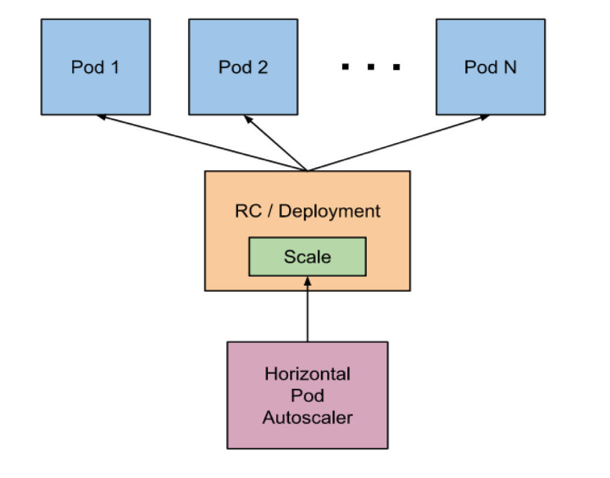

지난 챕터에서는 이미 배포되어 있는 애플리케이션을 무중단으로 업데이트하는 방법에 대해 보았습니다.
이번에는 이어서 애플리케이션을 자동으로 Scale-out 할수 있는 Horizontal Pod Autoscaler 기능을 적용해보도록 하겠습니다.
Horizontal Pod Autoscaler는 지정된 CPU 사용률을 기반으로 Replication Controller, Deployment 또는 Replica Set의 Pod 수를 자동으로 조정합니다.  Kubernetes에서는 CPU 자원에 대한 사용량을 다음과 같은 식으로 계산하여 Pod을 자동 Scale-out 할 수 있습니다.
[CPU example]
TargetNumOfPods = ceil(sum(CurrentPodsCPUUtilization) / Target)주기적으로 Pod의 자원 사용을 체크하고, 특정 시간의 여유를 두고 downscale/upscale이 이루어지는데, 이는 kube-controller-manager가 담당합니다. 아래와 같은 설정은 HPA 개별적으로 적용할 수 있는 부분은 아니고 kube-controller-manager에 적용이 된다면 클러스터 환경에 전체적으로 적용이 됩니다. Minikube의 경우 kube-controller-manager를 위한 설정 파일이 존재합니다. (/etc/kubernetes/manifests/kube-controller-manager.yaml)
kube-controller-manager는 Kubernetes 내 daemon 중 하나이고, default로 설정된 사항은 다음과 같습니다.
–horizontal-pod-autoscaler-downscale-delay : 마지막 다운스케일 후 n시간 경과 후 다음 다운스케일 가능 (디폴트 5분)
–horizontal-pod-autoscaler-upscale-delay : 마지막 업스케일 후 m시간 경과 후 다음 업스케일 가능 (디폴트 3분)
–horizontal-pod-autoscaler-sync-period : 필요한 Pod 수 계산을 위한 시간 간격 설정 가능 (디폴트 30초)
Horizontal Pod Autoscaler는 Kubernetes에서 축약어로 HPA 또는 hpa라고 부르기도 합니다. HPA object 생성을 위한 yaml 파일을 통해 HPA를 적용 할 수 있습니다.
HPA가 부하 발생에 따른 필요한 Pod의 수를 계산하기 위해 기준이 되는 Resources Requests 사용량을 설정해야 합니다. 최대 자원 사용량도 Deployment object yaml에 작성할 수 있습니다.
Deployment를 통한 Resources Requests 설정 Deployment yaml 파일을 작성하고, containers 설정 부분에 resources.requests.cpu 부분에 CPU 자원을 200m(milli-cores) 또는 0.2로 요청합니다.
gs-spring-boot-docker-deployment.yaml
apiVersion: apps/v1beta2 # for versions before 1.8.0 use apps/v1beta1
kind: Deployment
metadata:
name: gs-spring-boot-docker-deployment
labels:
app: gs-spring-boot-docker
spec:
replicas: 1
minReadySeconds: 10
strategy:
type: RollingUpdate
rollingUpdate:
maxUnavailable: 25%
selector:
matchLabels:
app: gs-spring-boot-docker
template:
metadata:
labels:
app: gs-spring-boot-docker
spec:
containers:
- name: gs-spring-boot-docker
image: dtlabs/gs-spring-boot-docker:1.0
imagePullPolicy: Always
ports:
- containerPort: 8080
resources:
requests:
memory: "256Mi"
cpu: "200m"
limits:
memory: "1Gi"
cpu: "500m"# kubectl apply 명령어로 Deployment object 설정 변경을 적용 합니다.
$ kubectl apply -f gs-spring-boot-docker-deployment.yaml
deployment "gs-spring-boot-docker-deployment" configured
Service 생성
gs-spring-boot-docker-service.yaml
apiVersion: v1
kind: Service
metadata:
name: gs-spring-boot-docker-service
spec:
ports:
- name: http
port: 8081
targetPort: 8080
selector:
app: gs-spring-boot-docker
type: NodePort# Service 생성
# kubectl apply 명령어에서 -f 옵션을 통해 파일명이 gs-spring-boot-docker-service.yaml 임을 인자로 전달합니다.
$ kubectl apply -f ./gs-spring-boot-docker-service.yaml
service "gs-spring-boot-docker-service" created# Service object 조회를 통해 NodePort를 알아냅니다.
# 8081:30993/TCP 에서 30993이 외부로 노출된 NodePort 입니다.
$ kubectl get svc
NAME TYPE CLUSTER-IP EXTERNAL-IP PORT(S) AGE
gs-spring-boot-docker-service NodePort 10.99.197.147 <none> 8081:30993/TCP 12m
kubernetes ClusterIP 10.96.0.1 <none> 443/TCP 14d테스트하기 위한 애플리케이션명은 ‘gs-spring-boot-docker’ 입니다. 여기에 suffix로 ‘-hpa’를 추가 합니다. suffix는 선택사항으로 필수는 아닙니다.
이 문서에서는 ‘gs-spring-boot-docker’ 이름의 애플리케이션에 대한 ‘hpa’ object 생성을 위한 yaml이라는 의미로 gs-spring-boot-docker-hpa.yaml 파일을 생성합니다.
gs-spring-boot-docker-hpa.yaml
apiVersion: autoscaling/v1
kind: HorizontalPodAutoscaler
metadata:
name: gs-spring-boot-docker-hpa
spec:
maxReplicas: 10
minReplicas: 1
scaleTargetRef:
apiVersion: apps/v1beta2
kind: Deployment
name: gs-spring-boot-docker-deployment
targetCPUUtilizationPercentage: 50API Server에서 관리되는 API 버전을 나타냅니다. 사용자가 입력한 apiVersion에 맞는 API를 사용하게 됩니다. Kubernetes API는 실험 단계의 API를 ‘beta’ 형태로 지원하고, 지속 업데이트 하고 있습니다. 따라서 Kubernetes API 공식문서를 통해 현재 사용자의 Kubernetes 버전 별 호환 및 사용 가능한 API를 확인 후 사용해야 합니다. 현재 HPA의 경우 stable 버전(autoscaling/v1)에서는 CPU 리소스에 대해서만 오토스케일링을 지원하며, beta버전(autoscaling/v2beta1)에서 Memory 또는 사용자의 custom metrics 등의 리소스를 추가적으로 지원하고 있습니다.
현재 yaml이 어떤 object를 생성하기 위함인지 kind에 설정합니다. kind: HorizontalPodAutoscaler 설정을 통해 현재 yaml로 HorizontalPodAutoscaler object를 생성하게 됩니다.
HorizontalPodAutoscaler object 자신의 고유 정보를 입력합니다.
HorizontalPodAutoscaler object에 대한 Unique-key를 입력합니다. 이 name 값을 통해 여러 object 중 해당 name을 갖는 object를 조회할 수 있습니다.
HorizontalPodAutoscaler object가 수행하는 내용에 대한 설정 입니다.
업스케일 시 생성할 수 있는 Pod의 최대수를 설정합니다.
다운스케일 시 생성할 수 있는 Pod의 최소수를 설정합니다.
HorizontalPodAutoscaler object가 동작할 대상에 대한 설정 입니다.
HorizontalPodAutoscaler object는 Deployment object 또는 ReplicaController object 등에 맵핑시킬 수 있고, 맵핑한 object의 apiVersion입니다.
HorizontalPodAutoscaler와 맵핑 될 object의 종류를 설정합니다. 해당 예제는 Deployment object가 관리하는 Pod을 대상으로 업스케일/다운스케일 됩니다.
HorizontalPodAutoscaler와 맵핑 될 Deployment object의 name을 설정 합니다.
Pod에 설정된 CPU resource에 대한 request 설정 기준대비 CPU 사용 임계치를 퍼센트(%)로 설정하는데, 숫자만 입력 합니다. 해당 임계치를 넘어서면 업스케일이 동작하게 됩니다.
kubectl autoscale 명령어를 통한 생성
HPA object는 파일 기반으로 생성하는 것 외에 아래와 같은 명령어를 통해서도 생성이 가능합니다.
# HorizontalPodAutoscaler 생성
$ kubectl autoscale deployment gs-spring-boot-docker-deployment --cpu-percent=50 --min=1 --max=10
deployment "gs-spring-boot-docker-deployment" autoscaled 그 밖의 HorizontalPodAutoscaler object yaml 파일 상세 작성 방법은 HorizontalPodAutoscaler API 공식문서 를 참고 바랍니다.
HorizontalPodAutoscaler 생성 확인
‘0% / 50%‘과 같이 사용량이 정상 표시 된 경우, Horizontal Pod Autoscaling의 준비가 완료된 것 입니다.
# HorizontalPodAutoscaler 생성
$ kubectl apply -f ./gs-spring-boot-docker-hpa.yaml
horizontalpodautoscaler "gs-spring-boot-docker-hpa" created
# horizontalpodautoscaler 생성 확인
# 'kubectl get horizontalpodautoscaler'와 'kubectl get hpa'는 동일한 의미 입니다.
$ kubectl get hpa
NAME REFERENCE TARGETS MINPODS MAXPODS REPLICAS AGE
gs-spring-boot-docker-hpa Deployment/gs-spring-boot-docker-deployment 0% / 50% 1 10 1 36m현재 사용량이 <unknown>인 경우가 발생할 수 있는데, 아래의 경우를 고려하여 사용량이 표시되도록 할 수 있습니다.
$ kubectl get hpa
NAME REFERENCE TARGETS MINPODS MAXPODS REPLICAS AGE
gs-spring-boot-docker-hpa Deployment/gs-spring-boot-docker-deployment <unknown> / 50% 1 10 1 36mkubectl get hpa 명령어에서 옵션으로 ‘-w ‘을 사용하게 되면, 실시간으로 갱신되는 정보를 지속 조회할 수 있습니다.
지속적인 모니터링을 위해 별개의 커맨드 창에서 수행하시기 바랍니다.
$ kubectl get hpa -w
NAME REFERENCE TARGETS MINPODS MAXPODS REPLICAS AGE
gs-spring-boot-docker-hpa Deployment/gs-spring-boot-docker-deployment 27% / 50% 1 10 1 2d부하테스트
URL 요청 테스트를 위해 wget 커맨드를 통해 접속 테스트의 반복 요청을 합니다.
URL은 Node의 IP와 Service가 NodePort 방식을 통해 외부로 노출된 Port를 사용합니다.
$ while true; do wget -q -O- http://169.56.109.58:30993; done
Hello Docker World
Hello Docker World
Hello Docker World
Hello Docker World
Hello Docker World
...CPU 사용량이 27%에서 106%으로 설정한 기준값인 50%를 넘게 되면서 Pod REPLICAS가 1 -> 3 으로 증가되고, 부하가 분산되었습니다.
시간이 지남에 따라 CPU는 24%로 안정되는 것 또한 확인할 수 있습니다.
$ kubectl get hpa -w
NAME REFERENCE TARGETS MINPODS MAXPODS REPLICAS AGE
gs-spring-boot-docker-hpa Deployment/gs-spring-boot-docker-deployment 27% / 50% 1 10 1 2d
gs-spring-boot-docker-hpa Deployment/gs-spring-boot-docker-deployment 27% / 50% 1 10 1 2d
gs-spring-boot-docker-hpa Deployment/gs-spring-boot-docker-deployment 106% / 50% 1 10 1 2d
gs-spring-boot-docker-hpa Deployment/gs-spring-boot-docker-deployment 106% / 50% 1 10 3 2
gs-spring-boot-docker-hpa Deployment/gs-spring-boot-docker-deployment 35% / 50% 1 10 3 2d
gs-spring-boot-docker-hpa Deployment/gs-spring-boot-docker-deployment 35% / 50% 1 10 3 2d
gs-spring-boot-docker-hpa Deployment/gs-spring-boot-docker-deployment 24% / 50% 1 10 3 2d
gs-spring-boot-docker-hpa Deployment/gs-spring-boot-docker-deployment 24% / 50% 1 10 3 2d